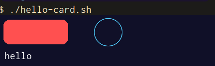
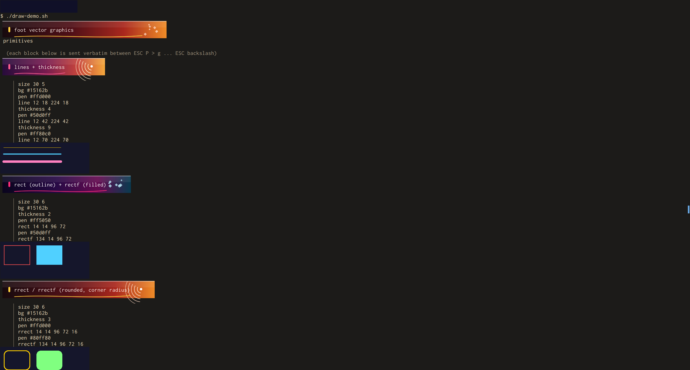
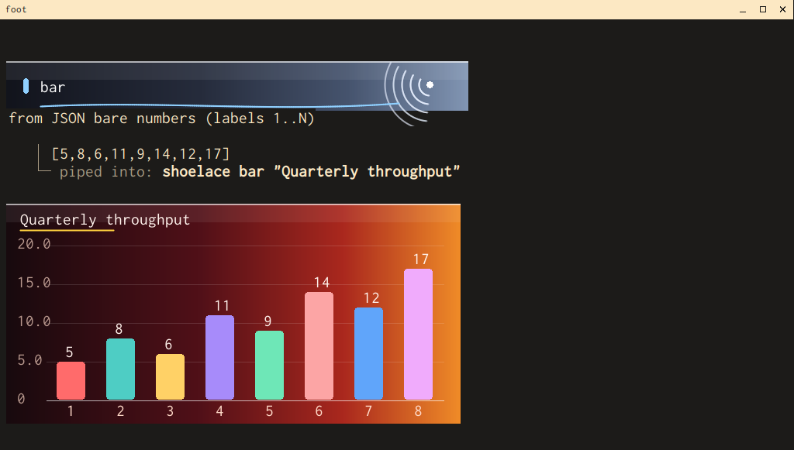
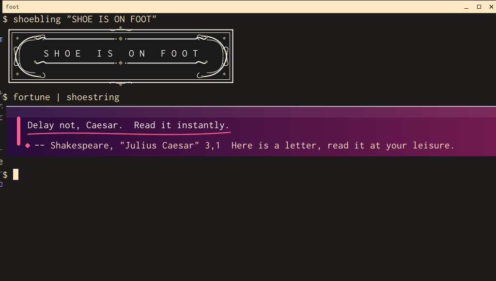
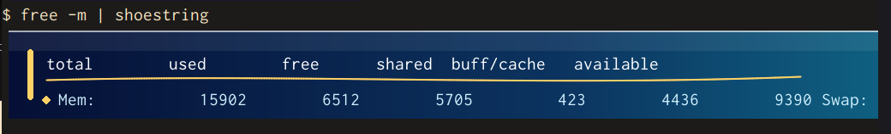
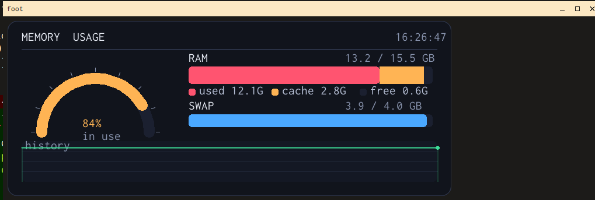
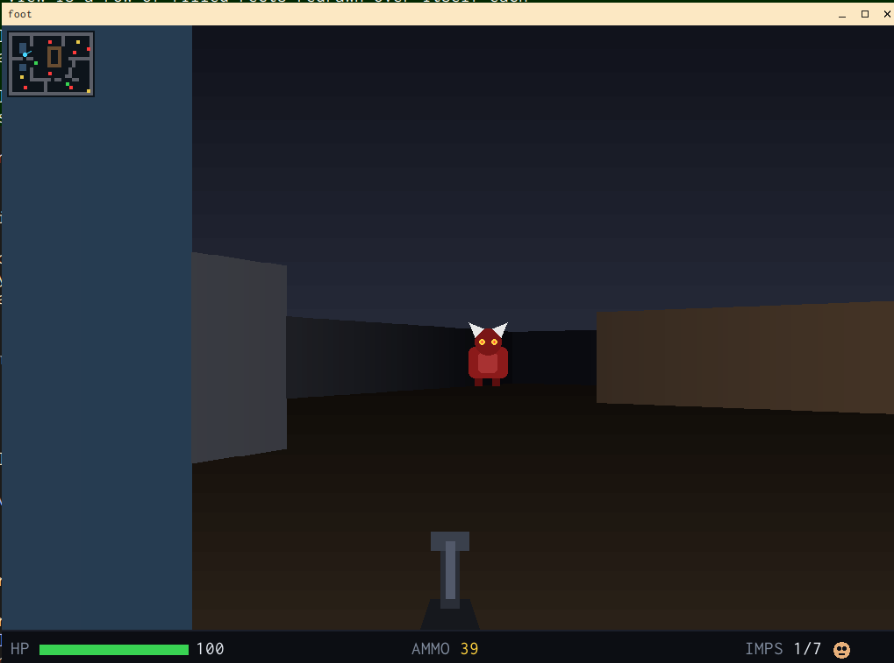

Lines, shapes, curves and text — drawn natively from a single escape sequence. No GPU, no GUI toolkit, no libraries. Just Shoe.
Shoe is the vector-graphics layer, built gratefully on the excellent foot terminal — and inspired by Pimoroni’s lovely PicoGraphics, whose pen/shape API set the whole idea in motion.

↑ rendered outputEvery image below is the terminal — no image viewer, no browser, no screenshot trickery. Shoe composites drawn canvases right onto the grid, so they scroll, scale and erase like any other output.
A dual-pane, Midnight-Commander-style explorer rendered entirely in vector graphics in your console — gradient panels, a glowing active pane, type icons and pill function keys. Full mouse support: click a row to select it, double-click to open a folder, scroll with the wheel and click the function-key bar — clicks land straight on the drawn rows via SGR-pixel reports. It's a demo of what the protocol can do: browse and view only — copy, move and delete aren't implemented.

A guided tour: each command block is printed, then drawn — lines & thickness, outlined and filled rects, rounded corners, circles, triangles, polygons and Béziers.

echo '[5,8,6,11,9,14,12,17]' | shoelace bar "Quarterly throughput" —
bar, line or pie, from CSV or JSON, parsed in pure awk.

Ornate vintage frames or themed gradient banners — and they fall back to plain text when there’s no graphics terminal.

free -m | shoestring —
pipe any output through it and the first line becomes a themed gradient banner, the rest the body.

A half-ring usage gauge, stacked RAM/swap bars and a history graph — refreshed
from /proc/meminfo, font-size independent, all in the terminal.
A game of Frogger in pure bash. ~60 fps using shoes vector based console graphics, WASD to hop across the road and river. Just run frogger.sh from your shoe terminal
Goto frogger.sh
A first-person shooter in your terminal. Pure Python calling our console vector graphics library — a software raycaster that draws every wall as a single shaded vertical rectangle, ~30 fps redrawn in place. Billboard imps depth-tested against the walls, mouse-look, a minimap and a status bar. WASD to move, mouse to aim, space to fire.
Goto shoomA whole (lovingly fake) Windows XP desktop, mouse-driven, in your terminal. The Bliss wallpaper, a Luna-blue taskbar with a live tray clock, a Start menu and a tiny window manager — draggable, focusable windows. Working apps too: a Calculator, My Computer with real disk gauges, a File Explorer over the real filesystem, Minesweeper, Notepad, Paint and a fake Internet Explorer. (Running here on ghostty which also now has support for our shoe console graphics but does also support foot/shoe of course)
Goto shoexpShoe running for real on Wayland — banners, charts and dashboards living alongside everything else. Click to view full size.
Open with ESC P > g, write
whitespace-separated drawing commands in pixels, close with ESC \.
The canvas is sized in cells, so it lands exactly where your cursor is.
size <cols> <rows> sets a canvas measured in terminal cells —
its pixel size follows the font automatically.
pen, thickness, then line, rect,
circ, arc, tri, poly,
bezier, text — colors are #rrggbbaa or none.
The drawn ARGB buffer rides the existing sixel pipeline, so it inherits placement, scrolling, scaling and erase-on-overwrite — with no changes to the renderer.
Newline- or whitespace-separated · # line comments · origin top-left, y down
Dependency-free software rasterizers — premultiplied ARGB, source-over blending — for everything you’d reach for on a 2D canvas.
Bresenham strokes at any width.
Outlined or filled, square or rounded.
Midpoint circles & partial arcs.
Barycentric & scanline fills.
Cubic curves, smooth at any scale.
Real fonts via fcft, tabs & color.
Mask drawing to a region.
The fine-grained bits.
The primitives ship with a set of self-contained shell scripts. Each one detects a graphics-capable terminal and falls back to plain text everywhere else.
Turns a line of text into a randomly-themed gradient banner. Title on line one, subtitle below.
An ornate vintage frame — corner scrollwork, double keyline, filigree dividers — built in awk.
Charts from CSV or JSON — object maps, arrays, label/value pairs or bare numbers.
A live memory dashboard: usage gauge, stacked bars and a history graph, redrawn in place.
A dual-pane file manager — Midnight-Commander style — with full mouse support (click, double-click, wheel), drawn entirely in vector graphics. A browse-and-view demo: no copy/move/delete.
Build Shoe, drop into the shell, and send your first escape sequence. Charts, banners and dashboards are one pipe away.